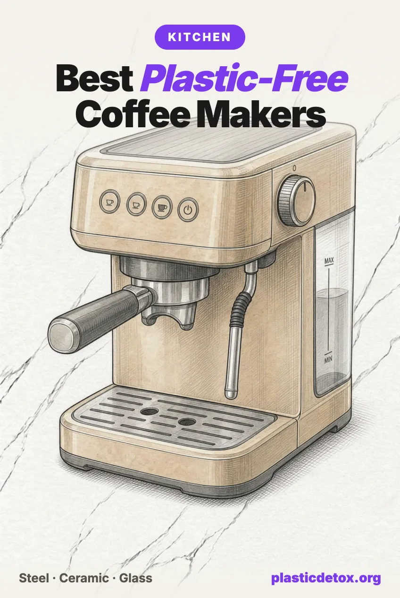

Best Plastic-Free Coffee Makers: Zero Plastic in the Hot Water Path (2026)

The 30 Second Summary
- Hot water through plastic is the mechanism. Lab testing published in Nature Food measured heated polypropylene releasing up to 16 million microplastic particles per liter at 70°C. A drip machine pushes roughly 93°C water through a plastic tank, plastic tubing, and a plastic brew basket on every cycle.
- Our top pick replaces the drip machine outright. The Farberware Yosemite stainless percolator makes 8 cups hands off on any stovetop through an all steel path, and holds 4.5 stars across 29,000 plus ratings.
- Glass French presses are the category's real safety record. Four separate recalls cover shattering Bodum and Bialetti glass presses, including 263,000 units in 2019 alone. Our press pick is the Frieling double wall stainless press: same brew, nothing to shatter.
- Every brew style has a zero plastic answer. The Hario V60 ceramic dripper for pour over, the Chemex for a full glass carafe, the Bialetti Venus for stovetop espresso, the Ovalware for cold brew, and the Flair PRO 3 for true lever espresso.
- Keurig is the machine to leave behind. Pods force near boiling water through a plastic and aluminum composite, 6.6 million brewers were recalled in 2014 after burn injuries, and Keurig later paid a $5.8 million penalty for failing to report the defect.
Why the Coffee Maker Is the Kitchen's Sneakiest Plastic
Coffee brewing combines the three conditions that drive chemicals and particles out of plastic: near boiling heat, long contact time, and repetition. Water in a drip machine reaches roughly 93°C and travels through a plastic reservoir, plastic tubing, and a plastic brew basket before it ever meets your mug. Then you do it again tomorrow. Whatever migrates, you drink 365 times a year.
The scale of the mechanism has been measured. A 2020 Trinity College Dublin study in Nature Food found polypropylene vessels released up to 16 million microplastic particles per liter when preparing formula with 70°C water. Your coffee brews hotter than that. No lab has published counts for each drip machine model, but the material and temperature are the same, and research on pod systems has found elevated bisphenols, phthalates, and aluminum in pod brewed coffee compared to glass and metal methods.
The good news is unusual for this site: the plastic free options here are not premium products. The stovetop percolator, the moka pot, the ceramic dripper, and the steel press are all mature, inexpensive designs that predate plastic coffee machines entirely. This is the rare category where the cleanest choice is also the cheapest and the most durable.
The One Standard: Zero Plastic in the Hot Water Path
Every pick below passes a single test: from the moment water heats until coffee reaches your cup, it touches only stainless steel, ceramic, or glass. Check any brewer you own the same way. Look at the water tank, the tubing, the part the water sprays or drips through, and the vessel it lands in. If every one of those is metal, ceramic, or glass, your brewing exposure is zero.
Wondering about the machine already on your counter? Type the brand into our free Product Check and it will tell you what we know about its materials, recalls, and lawsuits.
Our Picks
Every pick passed the same five point vet we run on everything: materials, what the listing actually discloses, independent certifications where they exist, lawsuits, and recalls. All seven were in stock and buyable the day we published, with review counts current the same day. As always, the top pick among safety passing products is decided by owner reviews.

Farberware Yosemite 8 Cup Percolator
Heavy duty polished stainless steel with a permanent stainless filter basket and glass sight knob. Makes 8 cups on any stovetop, fully immersible, dishwasher safe. 4.5 stars across 29,000 plus ratings.
View →
Hario V60 Ceramic Dripper
Japanese made ceramic cone that sits on your mug, completely inert with nothing to leach. Buy the ceramic version specifically; the same dripper is also sold in plastic.
View →
Bialetti Venus 6 Cup
All stainless steel body, boiler, and funnel, induction ready. Strong espresso style coffee with no plastic and no bare aluminum. 4.4 stars across 31,000 plus ratings. Skip the aluminum Moka Express.
View →
Ovalware Cold Brew Maker
Thick borosilicate glass carafe with an 18/8 laser cut stainless filter and stainless lid cap. A 12 to 24 hour steep touches only glass and steel. 4.5 stars across 13,000 plus ratings.
View →
Chemex Classic 8 Cup
One piece borosilicate glass carafe with a wood collar, unchanged since 1941. Brews a full pot of pour over with water touching nothing but glass. 4.8 stars, the highest rated pick here.
View →
Frieling Double Wall French Press
18/10 double wall stainless steel, German engineered, keeps coffee hot for hours. The full bodied French press brew with no glass carafe to shatter. 4.4 stars across 3,500 plus ratings.
View →
Flair PRO 3 Manual Lever
Fully manual lever espresso with an all stainless brew head, pressure gauge, and shot mirror. True 6 to 9 bar shots with zero plastic in the brew path. No cord, no reservoir.
View →Why the Farberware leads
Three picks here carry review counts most products never see: the Venus at 31,000 plus, the Farberware at 29,000 plus, and the Chemex rated highest of all at 4.8. Owner reviews break our ties, and the Farberware holds the best rating of the two giants while doing the one thing nothing else on this page does: it directly replaces a drip machine. Fill it, set it on the burner, and 8 cups make themselves. If you are here because the family coffee maker died, this is the answer that changes nothing about your morning except the plastic.
Every Brew Method Compared
| Brewer | Hot Water Touches | Makes | Effort |
|---|---|---|---|
| Stovetop percolator | Stainless steel only | 8 cups | None, it runs itself |
| Ceramic pour over (V60) | Ceramic + paper | 1 to 2 cups | 3 minutes of pouring |
| Chemex | Glass + paper | Up to 8 cups | 5 minutes of pouring |
| Moka pot (stainless) | Stainless steel only | Espresso style shots | None, stovetop |
| Steel French press | Stainless steel only | 4 to 8 cups | 4 minute steep |
| Cold brew (glass + steel) | Glass + stainless | Concentrate for days | Overnight steep |
| Manual lever espresso (Flair) | Stainless steel only | Espresso shots | Manual lever, some practice |
| AeroPress | Polypropylene chamber | 1 cup | 2 minutes |
| Electric drip machine | Plastic tank, tubing, basket | Up to 12 cups | None |
| Pod machine (Keurig, Nespresso) | Plastic path + pod composite | 1 cup | None |
The Glass Press Problem
We expected the classic glass French press to be a pick. The brew path is genuinely plastic free, the design is a century old, and one model has over 28,000 reviews. Then we ran our recall screen, and the glass press turned out to have the worst safety record in home coffee.
In January 2014, Bodum recalled about 29,000 Chambord presses because the glass carafe could fall out of its metal frame and shatter, posing laceration and burn hazards. In May 2019, roughly 263,000 Bodum made Starbucks presses were recalled after plunger knobs broke and nine people suffered lacerations. Bodum also recalled Chambord stovetop espresso makers in 2019 for fire hazards. And it is not one company: in 2017, 85,000 Bialetti branded glass presses were recalled because beakers broke during normal use. Burn lawsuits over carafes shattering full of scalding coffee have followed the category for years.
The physics is the point: a glass press asks a thin walled vessel to survive boiling water, a metal rod being pushed through it, and daily handling. Most survive for years. The record says enough do not. Since a double wall steel press makes identical coffee with nothing to shatter, we see no reason to accept the trade. We previously recommended the Bodum Chambord ourselves and have removed it from our store and guides; the Frieling is its replacement.
What We Did Not Pick
Keurig and pod machines
Pod brewing forces near boiling pressurized water through a plastic and aluminum composite capsule, then through the machine's plastic tubing. Research on pod systems has found elevated bisphenols, phthalates, and aluminum versus glass and metal brewing. The brand record is worse: Keurig recalled 6.6 million MINI Plus brewers in December 2014 after about 200 reports of hot spray and more than 100 burn injuries, then paid a $5.8 million civil penalty in 2017 for failing to report the defect for years. Nespresso machines share the plastic water path, with aluminum capsules. If a pod machine stays in your kitchen, our appliance guide covers the harm reduction steps.
Electric drip machines, including the premium ones
We looked for a drip machine with a fully metal hot water path and did not find one we could verify. Plastic tanks, plastic tubing, or plastic brew baskets appear in every model we checked, including machines that cost ten times our top pick. We do not recommend plastic bodied appliances as picks, period. If you want hands off batch coffee, the percolator is the honest answer; if you keep your machine, brew with fresh cold water each morning and run a flush before the first cup, per our complete coffee guide.
AeroPress
The AeroPress is beloved, travels well, and has no recalls. It is also a polypropylene chamber that holds hot water against plastic under pressure, and polypropylene is the exact material the Nature Food study measured shedding millions of particles per liter when heated. BPA free does not change that; as we explain in BPA free is not safe, the label says nothing about heat driven particle release. A reasonable travel compromise, not a plastic free brewer.
The aluminum Moka Express
The classic Bialetti Moka Express contains no plastic in the brew path, and it is the better choice over any pod or drip machine. But it brews acidic coffee in bare unlined aluminum twice a day. The all stainless Venus removes the question for a similar price, which is why it gets the card above. The same goes for the most popular mason jar cold brew system: a great glass jar with a plastic flip cap spout that the finished brew pours through; the Ovalware's stainless lid cap avoids it.
Espresso, Grinders and Filters
True espresso without plastic means a manual lever: the Flair PRO 3 above keeps the entire brew path stainless, and the cheaper Flair Classic shares the same design with fewer refinements. Plug in pump machines are a minefield of plastic tanks and near identical model variants with different boilers, so before buying one read the espresso section of our complete coffee guide. The same guide covers plastic free grinders, PFAS free paper filters, clean tested beans, and why the takeaway cup lid may be your biggest coffee exposure of all.
Frequently Asked Questions
Do coffee makers release microplastics?
The mechanism is well established: hot water in contact with plastic releases microplastic particles at scale. A 2020 Trinity College Dublin study in Nature Food measured polypropylene vessels releasing up to 16 million particles per liter with water heated to 70°C, and a drip machine runs hotter than that, pushing roughly 93° water through a plastic reservoir, plastic tubing, and a plastic brew basket on every cycle. No lab has published particle counts for each drip machine model, but every surface the water touches is a potential source, which is why our picks have hot water touching only steel, ceramic, or glass.
Are glass French presses safe?
The brew path of a glass French press is genuinely plastic free, but the category carries the worst safety record in home coffee: the CPSC recalled about 29,000 Bodum Chambord presses in 2014 because the carafe could fall out of its frame and shatter, about 263,000 Bodum made Starbucks presses in 2019 after nine lacerations from breaking plunger knobs, and 85,000 Bialetti branded glass presses in 2017 because the beakers broke during normal use. Burn lawsuits over shattering carafes of scalding coffee followed. A double wall stainless steel press like the Frieling gives you the same brew with nothing to shatter.
Is the AeroPress plastic free?
No. The AeroPress brew chamber and plunger are polypropylene, and hot water sits directly against that plastic under pressure while you brew. Polypropylene is one of the more stable food plastics and the product has no recalls, but polypropylene is also the exact material the Nature Food study measured shedding millions of particles per liter when heated. Treat it as a travel compromise rather than a plastic free brewer; at home, a ceramic dripper or steel press does the same job with zero plastic contact.
Are aluminum moka pots like the Bialetti Moka Express safe?
The classic Moka Express is bare aluminum, so it contains no plastic in the brew path, and the concern is different: unlined aluminum in contact with hot, acidic coffee, brew after brew. Aluminum exposure from cookware is generally modest, but a stainless steel moka pot removes the question entirely for a similar price. That is why our moka pick is the all stainless Bialetti Venus rather than the aluminum classic, and the same logic applies to bare aluminum stovetop espresso makers from any brand.
What is the least plastic electric coffee maker?
We could not find an electric drip machine that keeps plastic out of the hot water path entirely; even premium machines route heated water through plastic tanks, tubing, or brew baskets. The honest answer is that the hands off replacement is not another machine, it is a stovetop percolator: fill it, set it on the burner, and it makes 8 cups through an all stainless path. If you keep your drip machine, brew with fresh cold water rather than water that sat in the reservoir, and run a morning flush before the first cup.
Is cold brew in a plastic pitcher okay since there is no heat?
Heat accelerates leaching but is not required for it. Cold brew steeps for 12 to 24 hours, and long contact time is the other half of the migration equation, which is the same reason we treat PET bottled water as a real microplastic source despite being cold. With glass and stainless steel cold brew makers widely available at the same price as plastic ones, there is no reason to steep coffee in plastic overnight. Check the lid too: the most popular mason jar system's flip cap spout is plastic, and the brew pours through it.
Related Articles
- How to Enjoy Coffee Without Plastic
The complete guide: espresso machines, grinders, filters, beans, decaf, and takeaway cups. - Toxic Kitchen Appliances Ranked
Air fryers, toasters, kettles, and every other appliance, ranked by what leaches. - Kitchen Detox 101
The step by step kitchen overhaul, ranked by impact. - How to Avoid Microplastics in Tea
The other hot drink has a plastic problem too: tea bags that shed billions of particles. - BPA Free Is Not Safe
Why the label on plastic brewers and kettles does not mean what you think.